JF Coach V2 · feedback applied · 21 September 2026
Every item from Jamie's screen recording, shown before (frames from the recording) and after (the new build on a phone-size preview with synthetic data). Videos are short walkthroughs of the new flows.
Branch fable/v2-feedback-20260921 · commit b2e1d2a3 · lane build label v2-20260921-b2e1d2a3
My Day
"Why is there Upper twice? Why is Steps separate? Slight segmentation between workouts, check-in, nutrition and appointments."
Before
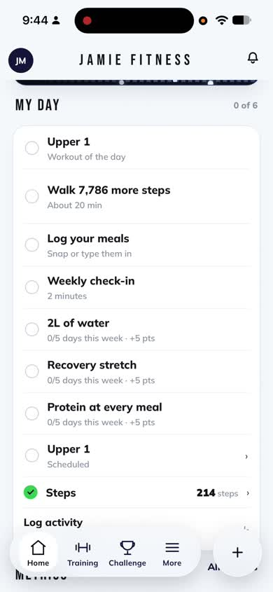
Ten rows under a "0 of 6" counter, Upper 1 twice, steps twice, three affordances in one list.After
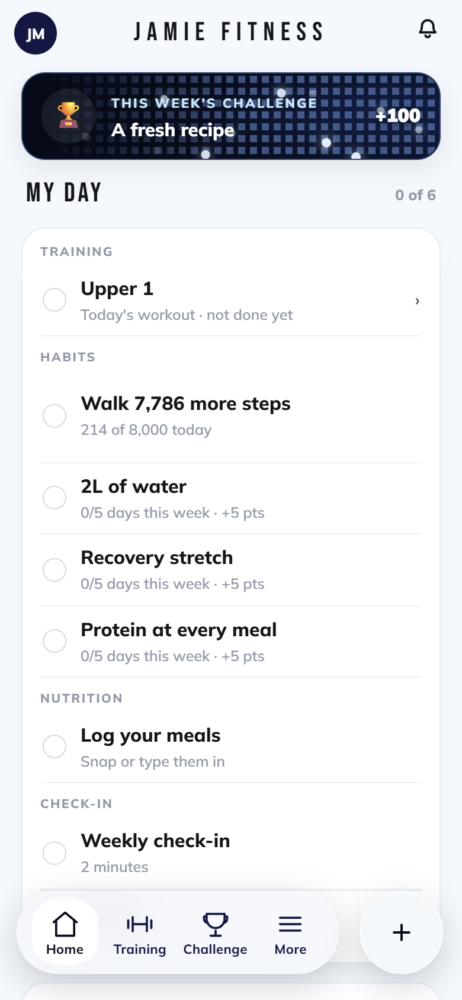
One card, quiet group labels, one row per thing. Steps row carries today's count against the goal.After · tick feedback kept
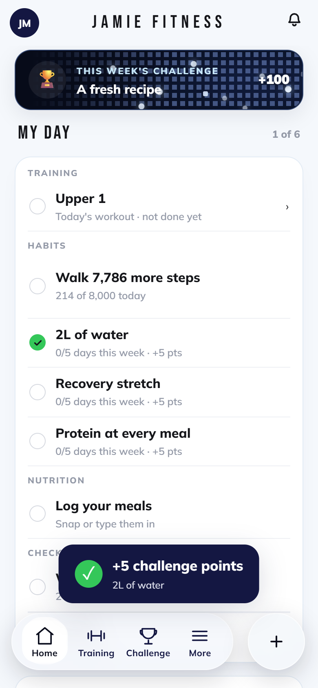
Ticking still works from Home and moves the counter.WalkthroughTicks, then Log activity opening as a sheet and closing by tapping outside.
JFI on Home
"I want that design to be the same on the home screen when I use JFI, even just the message and voice section."
Before
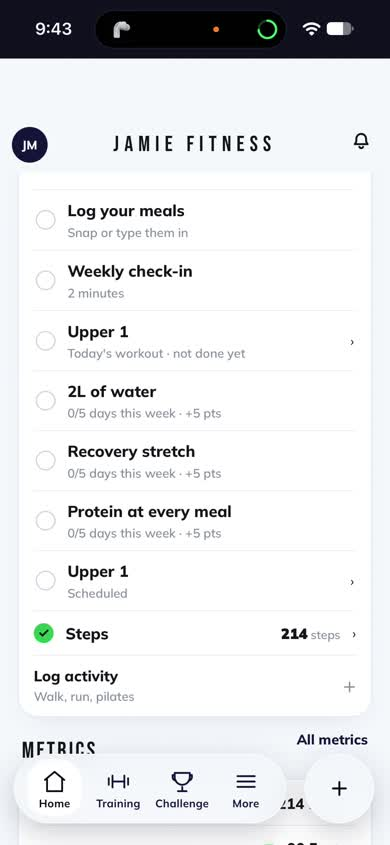
JFI row dropped straight into a full-screen chat. Also visible: the gap above the header after switching accounts.After
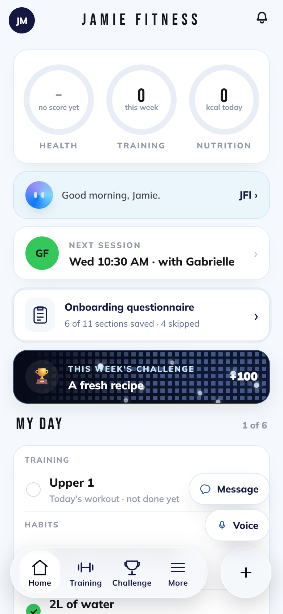
The JFI row now fans out Message and Voice from the orb, exactly like the program builder.After · Message
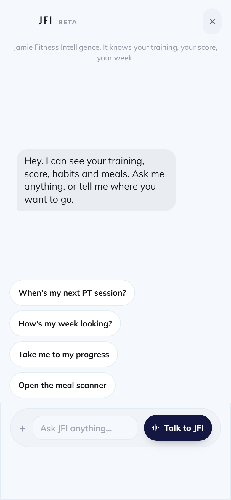
Message opens the conversation; Voice starts the call.WalkthroughTap JFI, pick Message, close.
Header gap: the shell now re-settles the viewport on mount, on pageshow and when the app returns to the foreground, so the notch-height gap after Switch account clears without killing the app. This one cannot be reproduced on the preview; it needs a phone check.
Log activity
"If I try to click out of log activity it doesn't work, I have to click the X." · "Instead of whiting the back screen, can you have a really nice blur effect."
Before
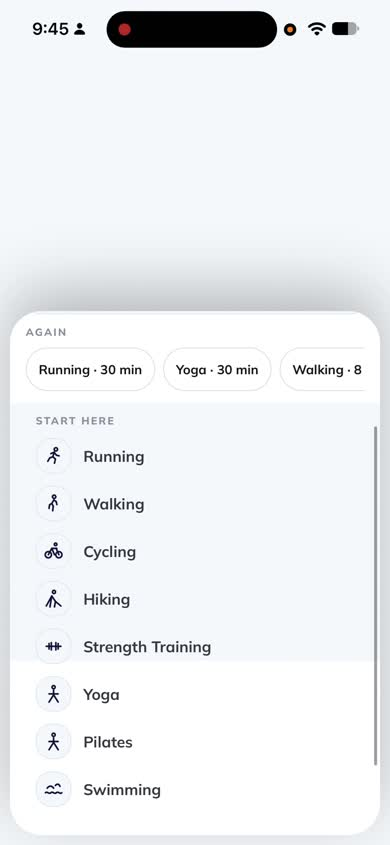
A route, so the screen behind unmounted and went white. Only the X closed it.After · from HomeA sheet over the page you were on, blurred behind. Tap outside or X to close.After · from Training
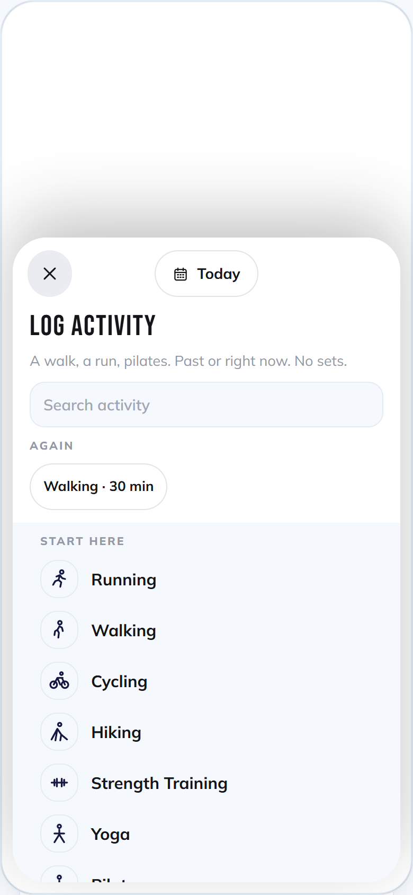
Same sheet from Training.
This Week
"Way too much going on at once. Too much text, too much subtext, too many sections. Take out the em dash. 1.70000 no, one decimal max. Calculations hidden by default."
Before
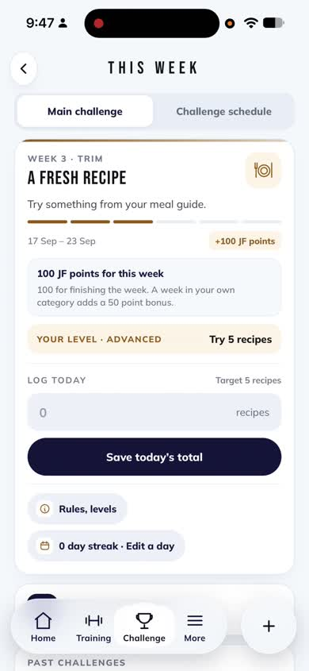
Nine stacked sections, expanded calculations, "1.7000000000000028", "194 → 194", em dashes.After
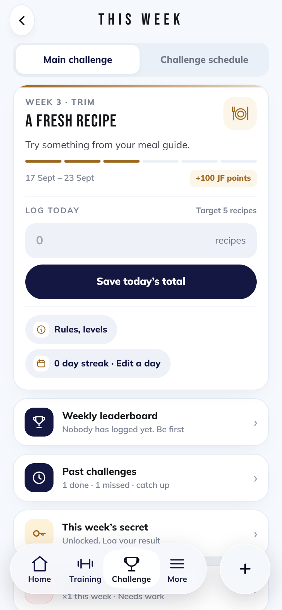
One hero (brief, points, log box, two chips), then row cards: leaderboard, past challenges, secret, boost.After · rows
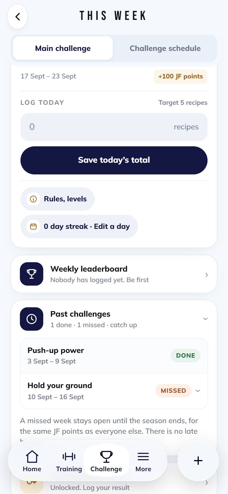
Past challenges opens in place. No em dashes.After · boost opened
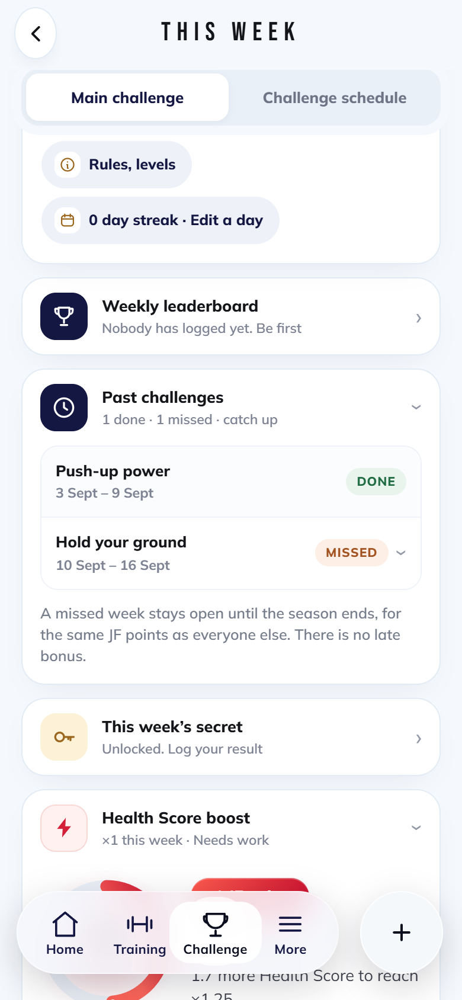
Boost collapsed by default; "1.7 more Health Score"; no "194 → 194" when nothing is boosted.After · rules sheet
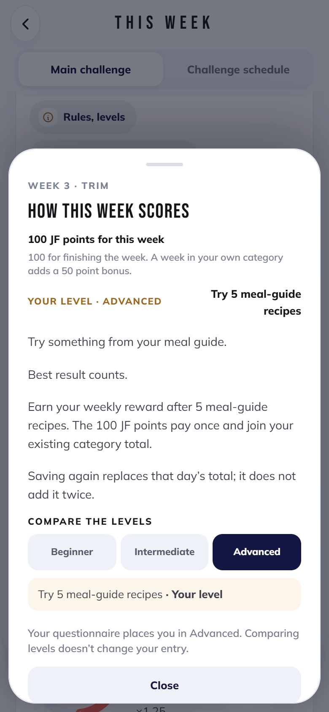
Points explanation and level moved into the Rules sheet.WalkthroughScroll, open past challenges, open the boost.
Training: phase history, workout cards, library, adjust vs build
"Phase history should come up as a card from the bottom." · "Pop-up cards aren't coherent, too big." · "What's the point of that library button?" · "Adjusting the existing program is different to creating a new one."
Before · phase history
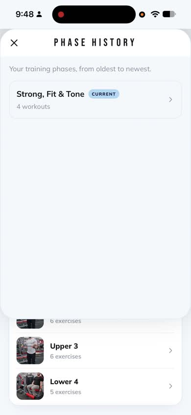
Started under the status bar, fixed height, gap below, nothing behind dimmed.After · phase history
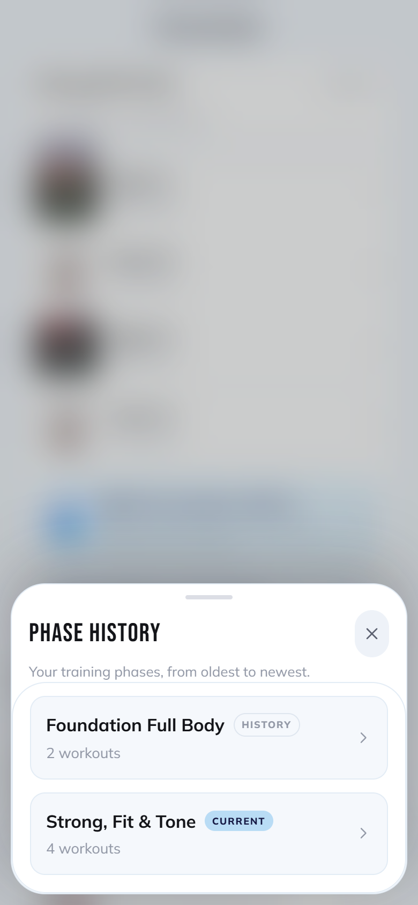
A card from the bottom, sized to its content, Training blurred behind.Before · workout card
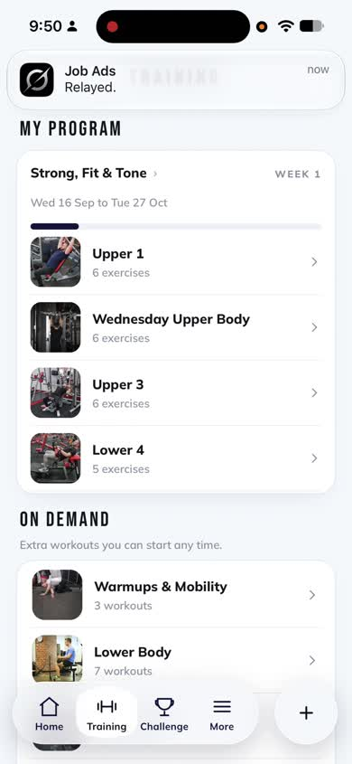
Card inside a card, three stat boxes, grey scrim.After · workout card
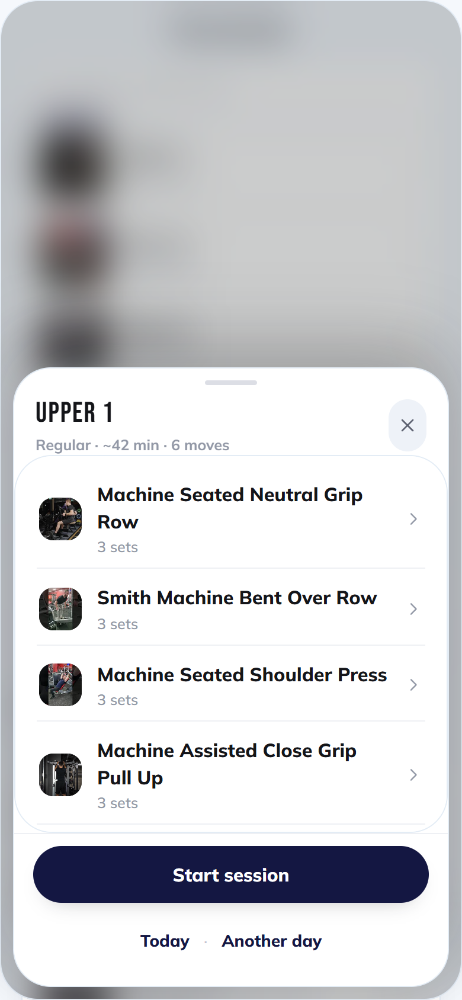
Title and X on one line, one meta line, the exercises, one button. Blurred scrim.After · My Program
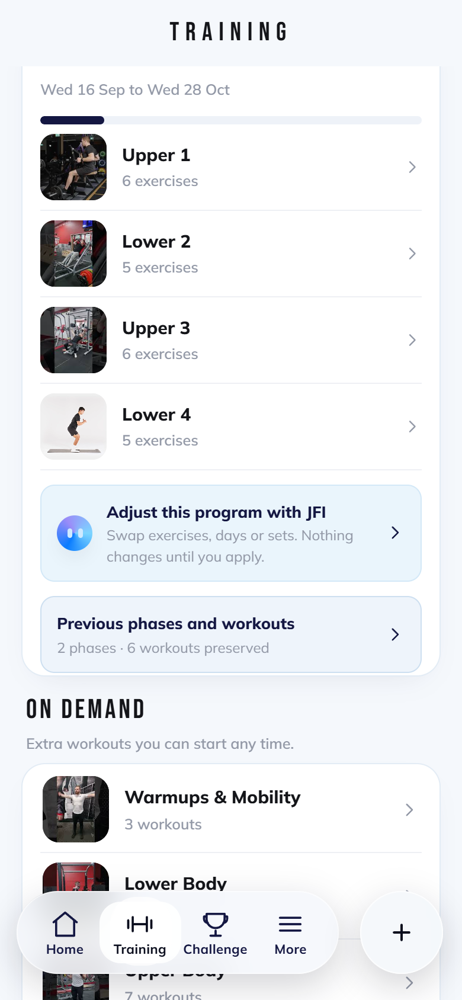
"Adjust this program with JFI" opens the builder on the current program with JFI asking what to change. "Build my program" stays the new-program path. Training library row removed.After · adjust entry
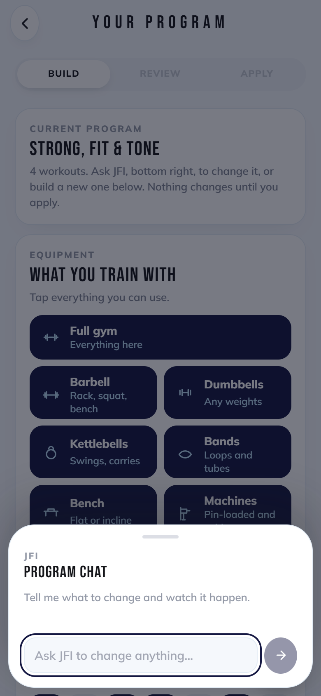
The builder in adjust mode.WalkthroughWorkout card, then phase history, both closed by tapping outside.
Challenge tab and home card
"This week's challenge on the home screen should take me to the Challenge section, then they can open the weekly challenge."
Before
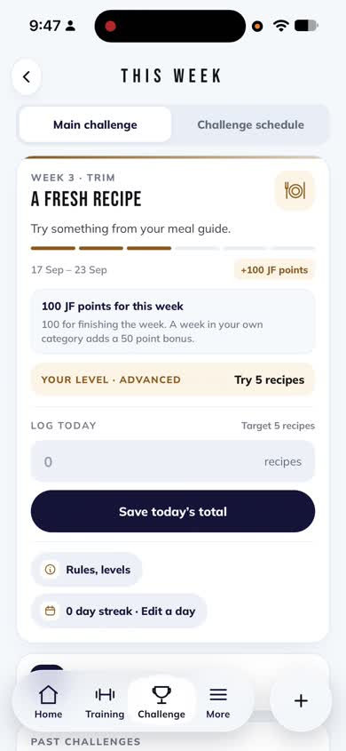
The home card jumped straight into the weekly task.After
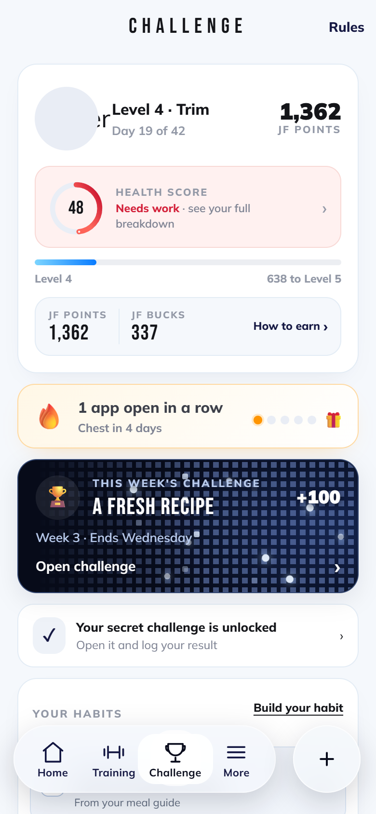
The home card now lands here; the weekly challenge is one tap further.
Noted, not changed in this release
Progress screen ("that doesn't look right, a different design"): a separate redesign, not started.
Health ring value moving between renders (47, 31, 17, 23, 43) in the recording: a data question, not touched.
JFI tooltips covering exercise names on the builder review: not requested, left as is.